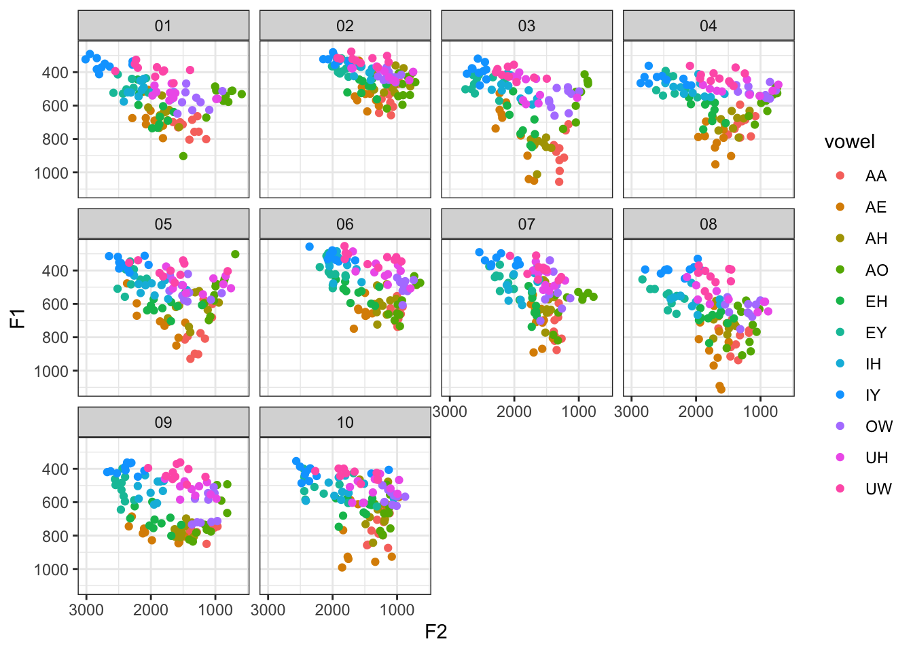

library(tidyverse)
library(tidynorm)
# remotes::install_github("joeystanley/joeysvowels")
library(joeysvowels)Josef Fruehwald has recently released the tidynorm R package. It “provide[s] convenient and tidy functions to normalize vowel formant data.” Since I normalize my data a lot and am entrenched in the tidyverse, I thought I’d give it a try, especially since I have also written some functions that normalize vowel data and I wanted to compare them. After playing around tidynorm, I can confidently say it’s a lot better than what my R packages did. So, the purpose of this post is to
Show a little bit of what
tidynormcan do.Convince you to switch from the normalization functions in my own packages (namely,
joeyr) and totidynorm.
On this page, I walk through the functions in tidynorm that normalized point-based (i.e. not trajectory) formant data. I’ll follow along this article. As I go through each one, I’ll show how you can implement each method using my own packages if applicable, and how it’s done in tidynorm. Hopefully by the end, I will have convinced you to start adopting tidynorm.
Preliminaries
I’ll load the packages I need, including my own joeysvowels package from Github.
I’ll play around with the Idahoans dataset in this post, which sample data from 10 people from Idaho.
idahoans <- joeysvowels::idahoans |>
rowid_to_column("token_id") |>
select(-sex, -F4) |>
print()# A tibble: 1,100 × 6
token_id speaker vowel F1 F2 F3
<int> <fct> <chr> <dbl> <dbl> <dbl>
1 1 01 AA 699. 1655. 2019.
2 2 01 AA 685. 1360. 1914.
3 3 01 AA 713. 1507. 2460.
4 4 01 AA 801. 1143. 1868.
5 5 01 AA 757. 1258. 1772.
6 6 01 AA 804. 1403. 2339.
7 7 01 AA 664. 1279. 1714.
8 8 01 AA 757. 1325. 1929.
9 9 01 AA 730. 1578. 2297.
10 10 01 AA 700. 1546. 2109.
# ℹ 1,090 more rowsI created this dataset for the express purpose of testing out normalization functions. Let’s take a peek at it.
ggplot(idahoans, aes(F2, F1, color = vowel)) +
geom_point() +
scale_x_reverse() +
scale_y_reverse() +
facet_wrap(~speaker) +
theme_bw()
I’ll load my packages as well.
# remotes::install_github("joeystanley/joeyr")
library(joeyr)
Attaching package: 'joeyr'The following object is masked from 'package:tidynorm':
norm_deltaF# remotes::install_github("joeystanley/barktools")
library(barktools)
Attaching package: 'barktools'The following object is masked from 'package:joeysvowels':
mouthLobanov normalization
Though Barreda (2021 and 2025) advises against Lobanov normalization, I’ll start there because it’s probably the most familiar to the most number of people. Lobanov normalization is straightforward and can be easily implemented with the scale function in base R. Here’s a more verbose way of doing things:
idahoans |>
group_by(speaker) |>
mutate(F1_z = scale(F1),
F2_z = scale(F2),
F3_z = scale(F3))Here’s a more compact way that is functionally equivalent using some tidyverse tricks.
idahoans |>
mutate(across(F1:F3, scale, .names = "{.col}_z"), .by = speaker)Here’s how you’d do the Lobanov normalization in tidynorm:
idahoans_lob <- idahoans |>
norm_lobanov(F1:F3, .by = speaker, .silent = TRUE) |>
print()# A tibble: 1,100 × 10
.id token_id speaker F1 F2 F3 F1_z F2_z F3_z vowel
<int> <int> <fct> <dbl> <dbl> <dbl> <dbl> <dbl> <dbl> <chr>
1 1 1 01 699. 1655. 2019. 1.15 -0.341 -1.31 AA
2 2 2 01 685. 1360. 1914. 1.04 -0.906 -1.57 AA
3 3 3 01 713. 1507. 2460. 1.26 -0.624 -0.239 AA
4 4 4 01 801. 1143. 1868. 1.94 -1.32 -1.68 AA
5 5 5 01 757. 1258. 1772. 1.59 -1.10 -1.91 AA
6 6 6 01 804. 1403. 2339. 1.97 -0.824 -0.534 AA
7 7 7 01 664. 1279. 1714. 0.872 -1.06 -2.06 AA
8 8 8 01 757. 1325. 1929. 1.60 -0.972 -1.53 AA
9 9 9 01 730. 1578. 2297. 1.39 -0.488 -0.637 AA
10 10 10 01 700. 1546. 2109. 1.15 -0.550 -1.09 AA
# ℹ 1,090 more rowsSo, the output is identical. The benefit of using scale is that you pop the hood a little bit and it’s easier to see what mathematically is happening. The benefit of using norm_lobanov is that it’s easy to see that you’re doing the Lobanov normalization.
One thing that I think is worth mentioning here—and this will be true of all the tidynorm functions I show here—is that there are two changes to the dataframe other than the addition of new normalized vowel formant columns. First, there is a new .id column, which just shows the row numbers. That gets added during the normalization procedure and apparently stays. Also, the order of columns has shifted a little bit. The formant columns are now located before the vowel column.
Also, please note that tidynorm function calls by default return some helpful information that provides some good feedback to make sure you’ve normalized the way you meant to. For me though, those messages were causing some issues in my R console, so throughout this post I’ll use .silent = TRUE anytime I run a tidynorm function. Be sure to look at the output in your own code though, which you can can always do with check_norm.
check_norm(idahoans_lob)Normalization Step
• normalized with `tidynorm::norm_lobanov()`
• normalized `F1`, `F2`, and `F3`
• normalized values in `F1_z`, `F2_z`, and `F3_z`
• grouped by `speaker`
• within formant: TRUE
• (.formant - mean(.formant, na.rm = T))/(sd(.formant, na.rm = T))Logmeans (=Neary) normalization
My go-to normalization procedure now is the Nearey method, thanks to Barreda’s work. In my joeyr package, I had a function called norm_logmeans, which handled everything as best I could. (Although it was crashing for some users, and I’m not sure why.) It was pretty clunky because it required you to log transform the formant measurements first and I always ended up renaming the columns afterwards anyway. Because it was inhereted code, it also was a departure from tidyverse under the hood, so the result didn’t get returned as a tibble.
idahoans |>
mutate(across(F1:F3, log, .names = "{.col}_log")) |>
joeyr_norm_logmeans(.formant_cols = F1_log:F3_log,
.speaker_col = speaker,
.vowel_col = vowel) |>
rename(F1_logmeans = F1_log_logmeans,
F2_logmeans = F2_log_logmeans,
F3_logmeans = F3_log_logmeans) |>
tibble()# A tibble: 1,100 × 12
token_id speaker vowel F1 F2 F3 F1_log F2_log F3_log F1_logmeans
<int> <fct> <chr> <dbl> <dbl> <dbl> <dbl> <dbl> <dbl> <dbl>
1 1 01 AA 699. 1655. 2019. 6.55 7.41 7.61 -0.645
2 2 01 AA 685. 1360. 1914. 6.53 7.22 7.56 -0.666
3 3 01 AA 713. 1507. 2460. 6.57 7.32 7.81 -0.626
4 4 01 AA 801. 1143. 1868. 6.69 7.04 7.53 -0.509
5 5 01 AA 757. 1258. 1772. 6.63 7.14 7.48 -0.567
6 6 01 AA 804. 1403. 2339. 6.69 7.25 7.76 -0.505
7 7 01 AA 664. 1279. 1714. 6.50 7.15 7.45 -0.697
8 8 01 AA 757. 1325. 1929. 6.63 7.19 7.56 -0.566
9 9 01 AA 730. 1578. 2297. 6.59 7.36 7.74 -0.602
10 10 01 AA 700. 1546. 2109. 6.55 7.34 7.65 -0.644
# ℹ 1,090 more rows
# ℹ 2 more variables: F2_logmeans <dbl>, F3_logmeans <dbl>Fortunately, tidynorm makes this much easier to do now and you can do the whole thing with just one line of code.
idahoans |>
norm_nearey(F1:F3, .by = speaker, .silent = TRUE)# A tibble: 1,100 × 10
.id token_id speaker F1 F2 F3 F1_lm F2_lm F3_lm vowel
<int> <int> <fct> <dbl> <dbl> <dbl> <dbl> <dbl> <dbl> <chr>
1 1 1 01 6.55 7.41 7.61 -0.645 0.216 0.415 AA
2 2 2 01 6.53 7.22 7.56 -0.666 0.0197 0.361 AA
3 3 3 01 6.57 7.32 7.81 -0.626 0.123 0.613 AA
4 4 4 01 6.69 7.04 7.53 -0.509 -0.154 0.337 AA
5 5 5 01 6.63 7.14 7.48 -0.567 -0.0583 0.285 AA
6 6 6 01 6.69 7.25 7.76 -0.505 0.0506 0.562 AA
7 7 7 01 6.50 7.15 7.45 -0.697 -0.0416 0.251 AA
8 8 8 01 6.63 7.19 7.56 -0.566 -0.00604 0.369 AA
9 9 9 01 6.59 7.36 7.74 -0.602 0.169 0.544 AA
10 10 10 01 6.55 7.34 7.65 -0.644 0.148 0.459 AA
# ℹ 1,090 more rows
Note
It appears that the original F1–F3 columns have been lost and new log-transformed versions of them take their place. This appears to be a bug in the procedure and will hopefully be fixed soon.
As I was playing with this, I realized that my own norm_logmeans function wasn’t necessarily returning the same output. I found out it was for two reasons. First, I have been using log10 instead of log as input. I’m now pretty concerned that I might has messed up a lot of people’s analyses, including my own! The other reason was I had to make sure that I was using all the same formants (F1–F3 and not just F1 and F2) when doing the two procedures to get them to match. Fortunately, they do, which means my norm_logmeans function did indeed have the match all incorporated correctly. Still, I’d recommend switching over to tidynorm because it’s a whole lot less clunky than my own version.
Delta-F Normalization
In my joeyr package, I have a function called norm_deltaF. I wrote it quickly without much testing and I honestly haven’t used it much. But it does work:
idahoans |>
group_by(speaker) |>
joeyr_norm_deltaF(F1, F2, F3)# A tibble: 1,100 × 9
# Groups: speaker [10]
token_id speaker vowel F1 F2 F3 F1_deltaF F2_deltaF F3_deltaF
<int> <fct> <chr> <dbl> <dbl> <dbl> <dbl> <dbl> <dbl>
1 1 01 AA 699. 1655. 2019. 0.626 1.48 1.81
2 2 01 AA 685. 1360. 1914. 0.614 1.22 1.71
3 3 01 AA 713. 1507. 2460. 0.639 1.35 2.20
4 4 01 AA 801. 1143. 1868. 0.718 1.02 1.67
5 5 01 AA 757. 1258. 1772. 0.677 1.13 1.59
6 6 01 AA 804. 1403. 2339. 0.720 1.26 2.09
7 7 01 AA 664. 1279. 1714. 0.595 1.15 1.53
8 8 01 AA 757. 1325. 1929. 0.678 1.19 1.73
9 9 01 AA 730. 1578. 2297. 0.654 1.41 2.06
10 10 01 AA 700. 1546. 2109. 0.627 1.38 1.89
# ℹ 1,090 more rowsBut, this too was a bit clunky because rather than passing in all the formant columns at once, it actually required F1, F2, and F3 to be separate arguments. As expected, tidynorm::norm_deltaF handles this in a much more straightforward manner.
idahoans |>
tidynorm::norm_deltaF(F1:F3, .by = speaker, .silent = TRUE)# A tibble: 1,100 × 10
.id token_id speaker F1 F2 F3 F1_df F2_df F3_df vowel
<int> <int> <fct> <dbl> <dbl> <dbl> <dbl> <dbl> <dbl> <chr>
1 1 1 01 699. 1655. 2019. 0.626 1.48 1.81 AA
2 2 2 01 685. 1360. 1914. 0.614 1.22 1.71 AA
3 3 3 01 713. 1507. 2460. 0.639 1.35 2.20 AA
4 4 4 01 801. 1143. 1868. 0.718 1.02 1.67 AA
5 5 5 01 757. 1258. 1772. 0.677 1.13 1.59 AA
6 6 6 01 804. 1403. 2339. 0.720 1.26 2.09 AA
7 7 7 01 664. 1279. 1714. 0.595 1.15 1.53 AA
8 8 8 01 757. 1325. 1929. 0.678 1.19 1.73 AA
9 9 9 01 730. 1578. 2297. 0.654 1.41 2.06 AA
10 10 10 01 700. 1546. 2109. 0.627 1.38 1.89 AA
# ℹ 1,090 more rowsOne (of several) major benefits to tidynorm is its consistency in syntax. All three of my normalization procedures had different syntax, which reflected wildly different implementations under the hood. It was not good. tidynorm’s functions are all consistent because they actually call a more general norm_generic.
Bark Difference Metric
The last one that I’ve written code for that tidynorm handles so much better is the Bark Difference Metric. This was once a part of joeyr but I moved it to barktools instead. Here’s how you’d get the Bark Difference Metric using that package. First, you calculate the barks, and then you manually get the difference metric.
idahoans |>
mutate(across(F1:F3, bark, .names = "{.col}_bark"),
F1_barkdiff = F1_bark - F3_bark,
F2_barkdiff = F2_bark - F3_bark)# A tibble: 1,100 × 11
token_id speaker vowel F1 F2 F3 F1_bark F2_bark F3_bark F1_barkdiff
<int> <fct> <chr> <dbl> <dbl> <dbl> <dbl> <dbl> <dbl> <dbl>
1 1 01 AA 699. 1655. 2019. 6.52 11.7 13.1 -6.55
2 2 01 AA 685. 1360. 1914. 6.41 10.5 12.7 -6.30
3 3 01 AA 713. 1507. 2460. 6.62 11.1 14.4 -7.77
4 4 01 AA 801. 1143. 1868. 7.25 9.34 12.6 -5.30
5 5 01 AA 757. 1258. 1772. 6.94 9.95 12.2 -5.26
6 6 01 AA 804. 1403. 2339. 7.27 10.7 14.1 -6.79
7 7 01 AA 664. 1279. 1714. 6.25 10.1 12.0 -5.72
8 8 01 AA 757. 1325. 1929. 6.94 10.3 12.8 -5.83
9 9 01 AA 730. 1578. 2297. 6.75 11.4 13.9 -7.19
10 10 01 AA 700. 1546. 2109. 6.53 11.3 13.4 -6.84
# ℹ 1,090 more rows
# ℹ 1 more variable: F2_barkdiff <dbl>Straightforward and transparent. Here’s how you’d do it in tidynorm.
idahoans |>
norm_barkz(F1:F3, .by = speaker, .silent = TRUE)# A tibble: 1,100 × 10
.id token_id speaker F1 F2 F3 F1_bz F2_bz F3_bz vowel
<int> <int> <fct> <dbl> <dbl> <dbl> <dbl> <dbl> <dbl> <chr>
1 1 1 01 6.52 11.7 13.1 -6.55 -1.33 0 AA
2 2 2 01 6.41 10.5 12.7 -6.30 -2.26 0 AA
3 3 3 01 6.62 11.1 14.4 -7.77 -3.27 0 AA
4 4 4 01 7.25 9.34 12.6 -5.30 -3.21 0 AA
5 5 5 01 6.94 9.95 12.2 -5.26 -2.25 0 AA
6 6 6 01 7.27 10.7 14.1 -6.79 -3.41 0 AA
7 7 7 01 6.25 10.1 12.0 -5.72 -1.92 0 AA
8 8 8 01 6.94 10.3 12.8 -5.83 -2.48 0 AA
9 9 9 01 6.75 11.4 13.9 -7.19 -2.51 0 AA
10 10 10 01 6.53 11.3 13.4 -6.84 -2.08 0 AA
# ℹ 1,090 more rowsLike what we saw with the Lobanov method above, the benefit of using the more lower-level functions is that you are more closely connected to the math. The downside is that it’s prone to error and it’s not clear from the code what it’s actually doing. The benefit of this norm_barkz function is that it’s all wrapped up into one tidy function and the purpose is clear. In this case the F1_bz and F2_bz columns correspond to the difference metrics. The F3_bz column is not helpful since it’s just Bark(F3) - Bark(F3), which is zero, so you can drop it.
Watt and Fabricious method
This is not a method I have ever implemented in any of my packages, so I’ll just show how it’s done in tidynorm. (You can probably guess the syntax by now though!)
idahoans |>
norm_wattfab(F1:F3, .by = speaker, .silent = TRUE)# A tibble: 1,100 × 10
.id token_id speaker F1 F2 F3 F1_wf F2_wf F3_wf vowel
<int> <int> <fct> <dbl> <dbl> <dbl> <dbl> <dbl> <dbl> <chr>
1 1 1 01 699. 1655. 2019. 1.27 0.903 0.789 AA
2 2 2 01 685. 1360. 1914. 1.24 0.742 0.748 AA
3 3 3 01 713. 1507. 2460. 1.29 0.822 0.962 AA
4 4 4 01 801. 1143. 1868. 1.45 0.623 0.730 AA
5 5 5 01 757. 1258. 1772. 1.37 0.686 0.693 AA
6 6 6 01 804. 1403. 2339. 1.46 0.765 0.914 AA
7 7 7 01 664. 1279. 1714. 1.20 0.698 0.670 AA
8 8 8 01 757. 1325. 1929. 1.37 0.723 0.754 AA
9 9 9 01 730. 1578. 2297. 1.32 0.861 0.898 AA
10 10 10 01 700. 1546. 2109. 1.27 0.843 0.824 AA
# ℹ 1,090 more rowsConclusions
As you can see here, tidynorm handles various normalization procedures in a simple way with consistent syntax across functions. While some of my functions kinda worked, this works way better.
In fact, as of today, I have depreciated the three normalizations functions within joeyr (norm_logmeans, norm_anae, and norm_deltaF). The functions still do exist, but they do nothing other than give a message saying that you should switch to tidynorm. This means, if you update to joeyr version 0.10, it’ll introduce breaking changes into your code. If you want to keep using my functions, you can by adding joeyr_ as a prefix to the function name (e.g. joeyr_norm_logmeans).
There is more to tidynorm beyond what I’ve shown here, namely that it handles normalizing trajectory data and DCT coefficients, but I’ll have to play around with those later.